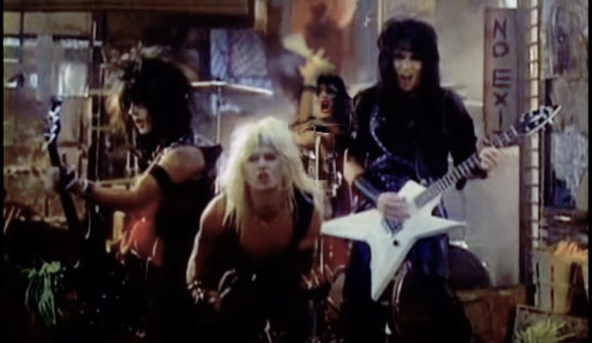
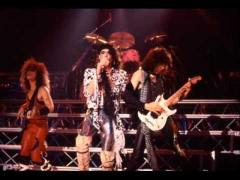
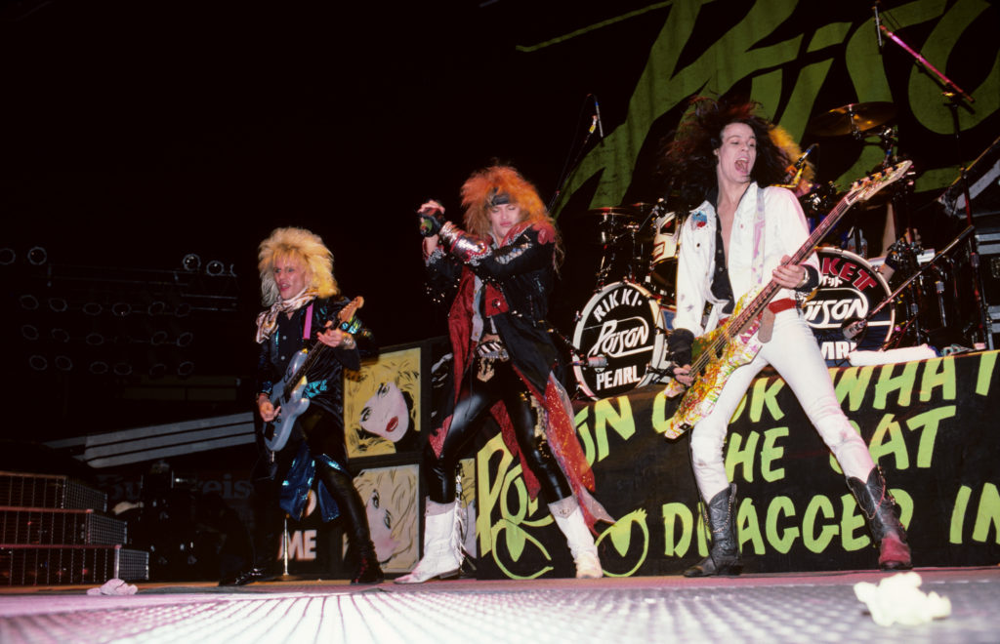

História do Glam Metal:  O glam metal (também conhecido como hair metal ou sleaze metal e, ainda, muitas vezes referido como sinônimo de pop metal. No Brasil particularmente, também chamado algumas vezes de metal farofa) é um sub-gênero do heavy metal que combina elementos do hard rock com o punk rock e a música pop. Foi bastante popular em toda a década de 1980 e início da década de 1990. As bandas de glam metal adotaram uma aparência, assim como na cultura punk, exageradamente extravagante. Os integrantes cultivavam uma aparência andrógina não só com cabelos longos, mas também um guarda-roupa em que as cores e o brilho ressaltavam. O uso de maquiagem também era bastante comum. Vale ressaltar que o contexto de extravagância não se limitava só à aparência, as performances em palco também eram bastante diferenciadas. Dentre as bandas de glam metal que mais tiveram destaque nas décadas 1980 e 1990 estão Bon Jovi, Stryper, Europe, Poison, Twisted Sister, Guardian, Cinderella, Warrant, Skid Row, Holy Soldier, Van Halen, Guns N' Roses e Mötley Crüe, sendo que algumas delas, como a banda Bon Jovi, tiveram que se reinventar nas décadas seguintes, tendo administrado carreiras bem-sucedidas. O gênero perdeu o interesse popular no final da década de 1980, sendo que o principal fator em seu declínio foi a ascensão do grunge no início de 1990, que tinha uma estética totalmente nova e contrastada ao estilo visual e comportamental do glam metal.  O hard rock, e o heavy metal começaram a ganhar destaque no final dos anos 60, com Deep Purple, Led Zeppelin e Alice Cooper, entre outros, gravando seus primeiros álbuns. Bandas como Quiet Riot e KISS surgiram nos anos 70, e aproveitaram, cada uma à sua maneira, o comportamento e visual chamativo de T.Rex, David Bowie, Johnny Thunders, Mott the Hoople e New York Dolls, verdadeiros precursores do estilo glam. Em meados dos anos 80 algumas bandas de hard rock e heavy metal adotaram o exagerado visual carregado e andrógino – Hanoi Rocks, Ratt, Bon Jovi, Poison, Mötley Crüe – entre outros, representando o estilo. Antes ainda, surgiu uma fase de busca por extremo virtuosismo instrumental, iniciada com o lançamento do primeiro disco do Van Halen, cujo guitarrista, Eddie Van Halen passou a ser bastante influente. A temática das canções era por vezes romântica com riffs longos, e muitas vezes enaltecia o hedonismo e o excesso relativamente a sexo e mulheres, dinheiro, drogas e fama. O estilo virou uma febre nos Estados Unidos e difundiu-se mundo afora, com a ajuda da MTV e seus videoclipes – na época uma novidade. Ao mesmo tempo em que algumas bandas se destacavam em shows super produzidos com grandes palcos, luzes, explosões e pilhas de amplificadores, muitas outras surgiram, sem o mesmo talento, de certa forma inflacionando o mercado. O glam se tornou uma caricatura de si próprio, e passou a ser esnobado e ridicularizado propositalmente pela própria MTV, que precisava de um novo estilo para explorar comercialmente, tendo-o encontrado no grunge, com suas temáticas existencialistas e tom depressivo, antagônico ao espírito de festa do glam, como era conhecido. Características e terminologia:  Musicalmente, o glam metal combina um som tradicional de heavy metal com elementos de hard rock e punk rock, adicionando ganchos criativos e riffs de guitarra criados pela música pop. Como outras músicas de heavy metal da década de 1980, eles geralmente apresentam shred guitar solos. Eles também incluem o uso extensivo de harmonias, particularmente características nas power ballads - músicas lentas e emocionais que gradualmente constroem para um final forte. Estes estavam entre os singles mais bem sucedidos comercialmente do gênero e abriram isso para um público mais amplo que não teria sido atraído pelo heavy metal tradicional. Os temas líricos geralmente lidam com o amor e a luxúria, com músicas muitas vezes dirigidas a uma mulher em particular. Esteticamente, o glam metal atrai fortemente o glam rock da década de 1970, frequentemente com cabelos backcombed muito longos, uso de maquiagem, roupas apertadas e acessórios (principalmente consistindo de jeans ou jeans de couro apertado, spandex e headbands). Os aspectos visuais do Glam Metal apelaram para os produtores de televisão musical, em particular a MTV, cujo estabelecimento coincidiu com a ascensão do gênero. Artistas de glam metal tornaram-se infames por seus estilos de vida descarados de drogas, strippers e festas noturnas, que estavam amplamente cobertas pela imprensa sensacionalista. A socióloga Deena Weinstein aponta para o grande número de termos usados para descrever mais formas comerciais de heavy metal, que ela se agrupa como metal lite. Estes incluem, ao lado de glam metal: metal melódico, metal falso, bandas de poodle, nerf metal, pop metal ou metal pop, o último dos quais foi cunhado pelo crítico Philip Bashe em 1983 para descrever bandas como Van Halen e Def Leppard. AllMusic distingue o metal pop, que se refere a toda a cena do heavy rock e heavy metal da década de 1980 (incluindo Def Leppard, Bon Jovi, Europe), do hair metal, cujas características são roupas chamativas e maquiagem pesada (como encarnado por Poison e Mötley Crüe). O uso do termo desgatante hair metal começou no início da década de 1990, à medida que o grunge ganhou popularidade à custa do metal dos anos 80. Na "árvore genealógica definitiva do metal" de seu documentário Metal: A Headbanger's Journey, o antropólogo Sam Dunn diferencia o pop metal, que inclui bandas como Def Leppard, Europe e Whitesnake, de bandas de glam metal que incluem Mötley Crüe e Poison. Algumas Bandas que Você deve conhecer: Formulario de pesquisa: O que você está achando sobre este site? Ajude-nos a melhorar CLIQUE AQUI Fonte: Data: 15/03/2021 – Segunda - feira Horário: 18:00:44 Criado e Desenvolvido por: Pedro Rammé Figueira